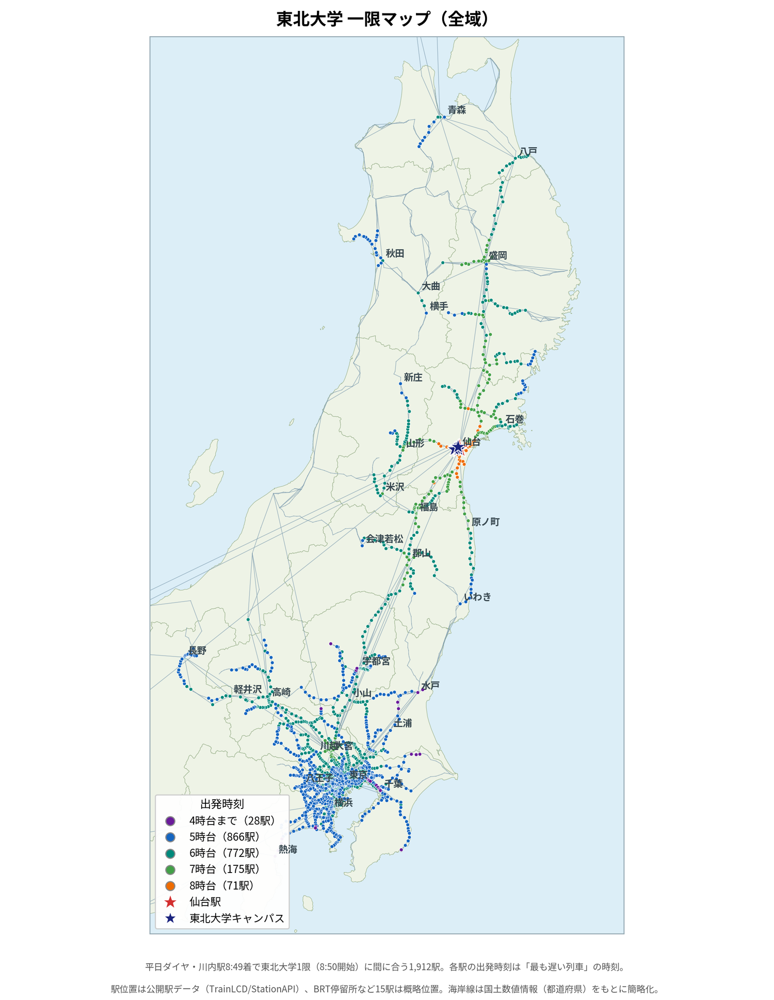
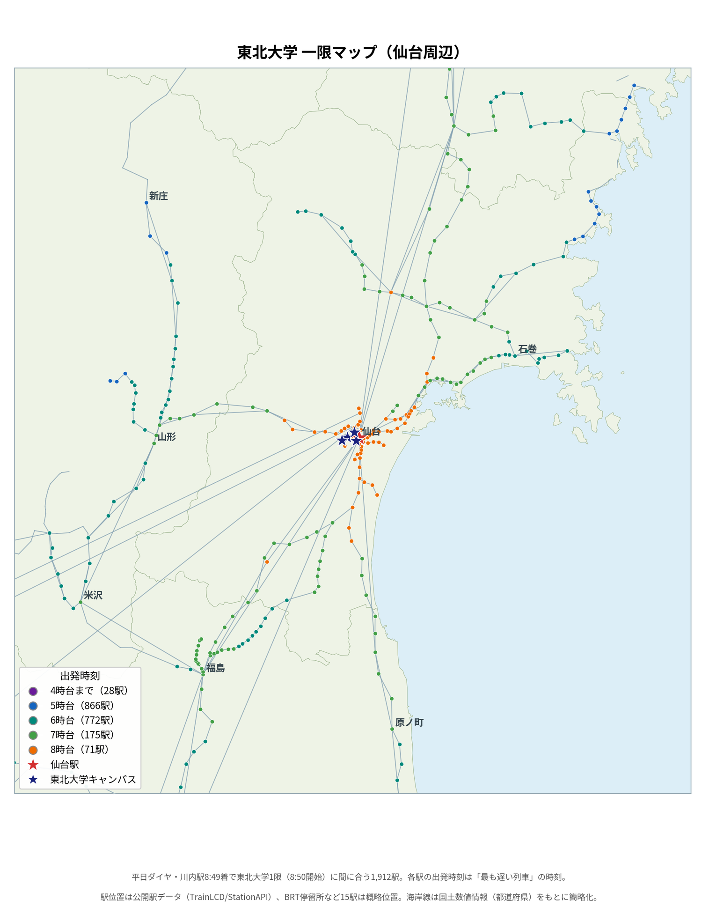

東北大学一限マップ
平日の時刻表を全て計算し、「東北大学の1限（8:50開始）に間に合う駅」を地図にしました。川内駅に8:49までに到着できる駅は全部で1,912駅。各駅の点は、その駅を出る「最も遅い列車」の出発時刻で色分けしています。
マップを全画面で開くマップ（操作できます）
表示範囲の切り替え、駅名検索、駅をタップしての詳細表示ができます。うまく表示されない場合は全画面表示をお試しください。
作品概要
「どこに住めば1限に間に合うのか」を、時刻表のデータから真面目に計算した地図です。JR・私鉄・地下鉄など計2,400本以上の列車データを使い、乗り換え（同一駅で3分以上）を含めて川内駅に8:49までに到着できる経路を全駅について探索しました。
結果は意外と広範囲で、熱海（4:35発）や下仁田（5:39発）、三崎口（5:25発）からでも1限に間に合います。逆に、長野電鉄の須坂（5:25発）のように、新幹線接続で間に合う駅もあります。点の色は出発時刻の早さ（紫=4時台まで、青=5時台、緑系=6時台、緑=7時台、橙=8時台）です。
地図は単一のHTMLファイルでできていて、地図データ・駅データをすべて埋め込んでいるため、外部サーバーへの読み込みなしで動作します。


制作工程
1. 時刻表の収集
JR東日本の時刻表PDF75ファイルに加え、関東・東北の私鉄や地下鉄の公式時刻表をウェブで調査し、平日ダイヤの列車データを集めました。
2. 乗り換え計算
全列車をグラフ化し、川内駅から逆向きにたどることで、各駅の「最も遅く出発しても間に合う便」を求めました。
3. 駅の座標付け
公開駅データをもとに全駅へ緯度・経度を付け、同名の別駅（例：長野電鉄の村山とJRの村山）は隣接駅の位置関係から切り分けました。
4. 地図化
都道府県の輪郭と鉄道路線を描き、1,912駅を出発時刻の帯で色分け。検索とズームができる単一HTMLファイルに仕上げました。
技術仕様
使用技術
- Python（時刻表解析・経路探索）
- HTML / SVG / JavaScript（地図表示）
仕様
- 対象駅：1,912駅
- 列車データ：約2,400本（平日ダイヤ）
- 条件：川内駅8:49着・乗換3分以上
作品データのダウンロード方法
駅ごとの出発時刻・経路をまとめた一覧表（Excel）は、サイドバーのダウンロードリンクから取得できます。